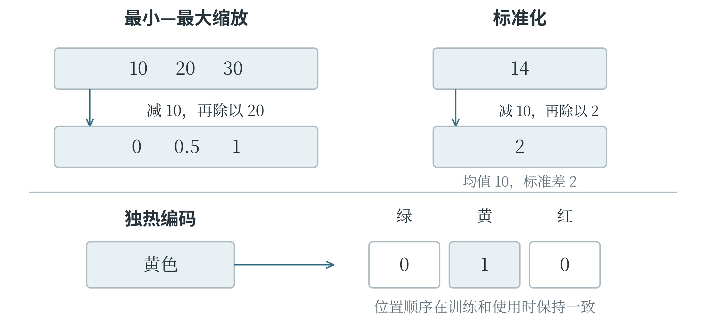
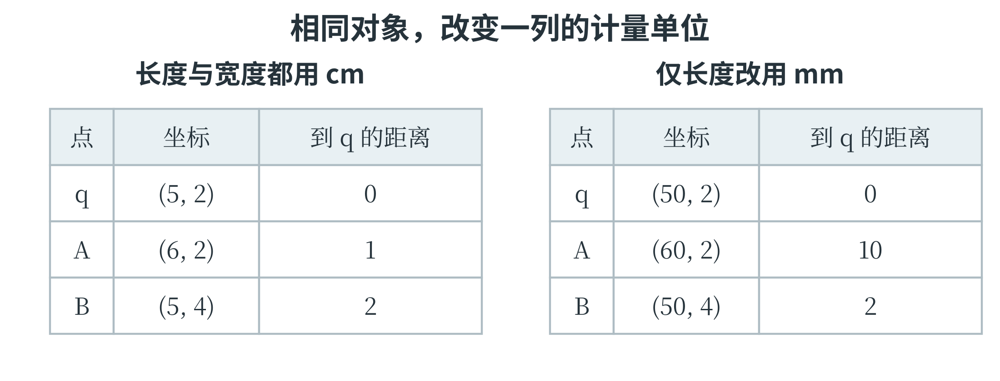
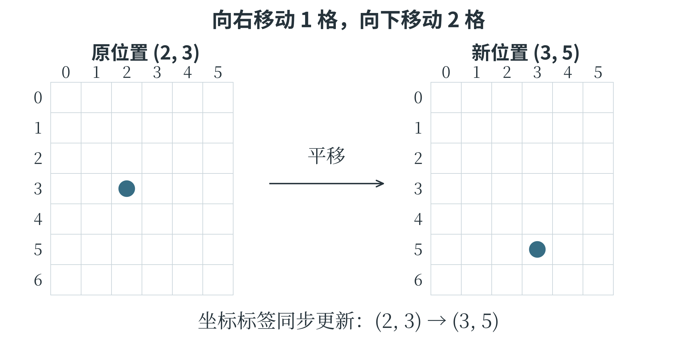
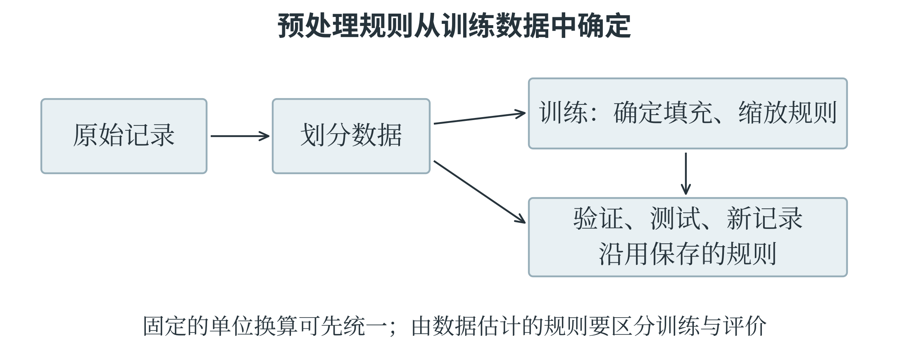

5.3 特征与数据预处理
清洗并不只是删除
把原始数据整理成适合分析和模型使用的形式，称为数据预处理。其中，纠正错误、处理缺失和重复等工作通常称为数据清洗。例如，“3.2 cm”和“32 mm”可以先统一为厘米；同一条记录误导入两次，应核对后去重；温度写成 280 摄氏度，则需要检查单位或录入过程。异常并不自动等于错误，一次真实的设备故障也可能产生少见数值，删除后反而会失去重要信息。
缺失值表示某项内容没有记录，不等于零。叶片宽度为零与没有测到宽度，是两个不同含义。处理方法可以是补测、删除少量不完整记录，或按合理方法填充。使用均值填充时，例如训练集中某列已知值为 2、4、6，平均值是 4，就用 4 填入缺失位置。模型随后面对验证集和测试集中的缺失项，也应沿用训练阶段确定的填充值，不能再用这些集合的平均值反过来帮助训练。
填入均值，补齐了表格，却没有补回那次测量。它还会把一些记录拉向中心，掩盖原先的不确定性。如果缺失本身有意义，还可以增加“是否缺失”这一特征。某些记录没有测量，可能因为仪器故障，也可能因为样本太小，原因不同，处理方式也可能不同。不存在适合所有数据的唯一填充规则。
对于有顺序的数据，可以根据相邻记录估计中间值，称为插值。若 9 时和 11 时的温度分别为 18、22 摄氏度，假设两小时内按直线变化，10 时便估为 20，这叫线性插值。它利用的是时间位置与变化假设，不能只看表中上下两行。若两次测量间隔很长，或期间发生突变，直线假设就可能不合适；若系统要在 10 时立即作预测，11 时的记录尚不可用，也不能把它当成当时能取得的信息。
同一处缺失可以怎样处理
一列训练数据为 2、4、缺失、6，已知三项的均值为 4。用均值填充后，得到 2、4、4、6，新的均值仍为 4。不过，原来已知三项的方差为 \(8/3\)，填充后四项的方差变为 2。增加一条恰好位于中心的记录，使数据看起来更集中。均值没有变化，并不意味着整组数据的统计性质都保持不变。如果缺失值来自仪器不容易测量的小叶片，直接填入平均宽度还可能系统性地高估这些样本。为每条记录另存一个“原先是否缺失”的标记，可以保留一部分有关缺失的信息；是否这样做、怎样使用该标记，仍需要通过合理的验证检查。
插值则依赖位置。上午 9 时气温为 18 摄氏度，11 时为 22 摄氏度，若假设中间匀速变化，9 时 30 分位于总时间的四分之一处，估计温度为：
直接取两个端点的平均数会得到 20，那是 10 时对应的插值，不能用于 9 时 30 分。数据表里两行之间看起来只隔着一个空格或一行，并不表示实际时间等距。处理观测记录时，位置、单位和顺序都会参与计算。
把几张表合在一起
数据集成是把不同来源的数据组合起来。两张表记录相同字段、不同对象时，可以上下追加记录。例如，上周的叶片记录与本周的叶片记录具有相同列，就可以接成一张更长的表。追加之前仍需检查单位、字段含义和重复记录；列名相同并不保证含义相同。
若两张表记录同一批对象的不同信息，则需要按共同的键进行连接，英文常称 join。例如，测量表含“样本编号、长度”，标注表含“样本编号、类别”，可以按样本编号将长度与类别配到一起。不能只按当前行号横着拼接，因为两张表的排序可能不同。共同的键应当指向同一个对象，否则表面整齐的数据也可能把甲样本的长度配给乙样本的类别。连接方式决定没有配对的记录怎么办。内连接只保留两边都匹配的键；左连接保留左表的全部记录，右表没有匹配时留下缺失值。如果右表同一编号出现两次，一条左表记录可能配出两行结果。这不一定是软件出错，而是连接规则产生的结果。
让不同数值能够合理比较
第四章的算法可以比较原始数值，但机器学习中的距离和优化过程还会受数值尺度影响。例如，一个特征范围约为 0—1，另一个约为 0—1000，直接计算欧氏距离时，后者的差异往往占据较大影响。特征缩放通过变换数值尺度，使比较和计算更合适；它不决定哪个特征在现实中更重要。
一种常用的归一化方法，是将训练数据某列的最小值与最大值对应到 0 和 1，称为最小—最大缩放。设这两个值分别为 \(x_{\min}\)、\(x_{\max}\)，一个原始值为 \(x\)，转换后为：
训练列为 10、20、30 时，转换结果为 0、0.5、1。新样本取 40，仍沿用训练范围，得到 1.5，并不自动截成 1；这表明新值超出了训练范围。若整列数都一样，分母为零，就不能直接使用这个公式，应按工具约定处理该常量列。“归一化”在不同资料中还可能指将整个向量缩放到单位长度，因此读到名称时要同时看具体公式。
另一种常用方法是标准化：减去训练列的均值，再除以标准差。用 \(\mu\) 表示均值、\(\sigma\) 表示非零标准差，有：
若一列数据的均值为 10、标准差为 2，原值 14 就变成 2，表示它比均值高两个标准差。标准化后的训练列均值为零、标准差为一，但不意味着数据变成正态分布；它只改变位置和尺度，没有把原本的分布形状重新塑造成钟形。图 5-4 对比这两类常见变换。

单位变化为什么会改变邻近关系
设一片待判断叶子的长度、宽度为 \((5,2)\)，两条参考记录分别为 A\((6,2)\)、B\((5,4)\)，单位都为厘米。按原始数值计算距离，待判断叶子到 A 的距离为 1，到 B 的距离为 2，A 更近。如果只把长度改用毫米记录，三条记录变成 \((50,2)\)、\((60,2)\)、\((50,4)\)，距离便变为 10 和 2，B 反而更近了。

叶片没有改变，改变的是某一列数值的比例。在距离的平方中，长度差从 1 变成 10，其贡献从 1 变成 100。采用基于距离的模型时，如果没有考虑各列尺度，就可能把“记录单位更细”误当成“应该更重要”。标准化或其他缩放方法可以使尺度有明确依据，但并不能代替对特征含义的判断。两个特征是否同等重要，仍然取决于任务和数据。
缩放规则应在训练集上确定。若训练列为 10、20、30，其最小—最大缩放规则为 \((x-10)/20\)。验证样本 25 变为 0.75，测试样本 40 变为 1.5，三部分始终使用同一把“尺子”。
若各份数据各用一把尺子，同一个原始数值就可能变成不同的数，训练与预测的计算条件也就不一致了。
类别和文字怎样变成特征
有些特征是类别，例如叶片颜色“绿、黄、红”。若直接编码为 0、1、2，依赖距离的模型可能把黄色看成恰好处于绿色和红色的中间，而颜色类别本身未必支持这种数量关系。独热编码，也称 One-hot 编码，为每个类别设一个位置，属于该类别的位置为 1，其余为 0。例如按“绿、黄、红”的顺序，黄色表示为 \((0,1,0)\)。独热向量像一排有固定名称的位置，1 所在的位置指出当前类别。因此，“绿、黄、红”这一顺序要保存下来，训练和使用时都沿用。类别种类越多，位置也越多；遇到原来没有的类别，则需要按照预先约定的方式处理，例如另设“其他”位置。这种表示保留了类别身份，并没有为颜色规定远近关系。
文字也可以从明确的规则开始表示，例如统计一条评论中某些词出现的次数。这样的词频特征容易理解，却可能丢失顺序：“猫追狗”和“狗追猫”中各个词出现的次数相同，追赶关系却正好相反。另一种方法是词嵌入，把词映射成较短的数值向量，这些向量通常通过学习得到，希望有用的语义或用法关系能在数值表示中体现出来。向量的每一维一般没有“颜色”“长度”这样直接的名称，距离也不自动等于人类对意义的全部判断。同一个词还可能随语境改变含义。“苹果落在地上”与“苹果发布新品”中的“苹果”，所指并不相同。一些模型会根据上下文形成不同的表示，而不总是取出一份固定向量。
一段文字怎样变成一行数
先使用一个小词表，观察词频表示的具体过程。约定词表顺序为“猫、追、狗”，并假定已经完成分词。句子“猫追狗”的三个词各出现一次，向量是 \((1,1,1)\)；“狗追猫”同样是 \((1,1,1)\)；“猫追猫”则是 \((2,1,0)\)。把每句话写成一行，就得到表 5-3。
表 5-3 固定词表下的词频特征
| 句子 | 猫 | 追 | 狗 |
|---|---|---|---|
| 猫追狗 | 1 | 1 | 1 |
| 狗追猫 | 1 | 1 | 1 |
| 猫追猫 | 2 | 1 | 0 |
前两行完全相同，说明这种表示已经把顺序区别丢掉。后续即使换一个更复杂的模型，只看到这三列，也无法从完全相同的输入中恢复究竟是谁追谁。如果任务只关心评论里是否提到某些物品，词频可能已经有用；如果任务要判断动作的承担者，就需要保留词序或更丰富的上下文。还可以把相邻两个词组成的片段作为特征，例如“猫—追”和“狗—追”，这就保留了一部分局部顺序。词表会因此变大，新句子中也可能出现从未记录过的片段。
词表本身也属于处理规则。用训练文字建立词表以后，新句子必须沿用相同列顺序；词表外的词按约定忽略或交给专门的未知词位置。若每句话都根据自己出现的词重新安排第一列，那么不同句子的第一列就不再具有相同含义。第七章中的数组列、表格字段和流水线，正是在程序层面保持这些对应关系。
数据增强为什么要保持任务含义
数据增强对已有样本作适当变换，构造额外的训练材料，帮助模型适应可能出现的变化。图像可以轻微旋转、裁切或调整亮度；语音可以加入适量背景噪声、调整音高；文本可以按任务需要遮盖部分词语或替换近义词。增强通常用于训练数据，独立评价材料应能反映实际使用条件。变换是否合适，要看标签是否仍然成立。把猫的照片轻微旋转，类别通常不变；将数字 6 大幅旋转，则可能接近 9。裁切若去掉了要识别的物体，原标签也可能不再有效。将“并不满意”中的“不”删去，文本含义更会发生反转。
增强应当保留任务所需的含义。变换之后，原答案是否还成立，需要重新检查。
处理步骤的先后也有意义。先按原始对象划分训练与评价材料，再只对训练部分做增强，可以避免同一张原图的不同变体落入两边。使用验证或测试信息帮助训练，或者让本应未知的信息提前进入模型，称为数据泄漏。数据泄漏可能让分数看起来很高，却不能说明模型对新样本同样有效。
变换数据时，标签也要跟着检查
图像增强还要区分不同类型的标签。整张图片分类时，标签可能只是“叶片”，轻微平移叶片的位置，类别通常保持不变；如果标签记录的是叶片中心坐标，图片平移以后，坐标就必须相应改变。同一种图像变换，在两种任务中需要不同的标签处理。设一张小图的坐标从 0 开始，某个目标中心原先位于 \((2,3)\)。向右平移一格、向下平移两格后，新的中心是 \((3,5)\)。如果变换后的图片仍配上旧坐标 \((2,3)\)，模型会被要求把新位置看成旧位置，监督信息便出现错误。图 5-6 用同一个点说明输入与标签需要怎样配合。

裁切也如此。裁掉左边一列后，原来横坐标为 3 的点，在新图中横坐标变成 2；若目标整个被裁掉，就不能继续把这张图当作“目标完整存在”的正例。平移、裁切和旋转的计算规则可以由程序执行，但规则是否适合任务，要在设计增强时先判断清楚。
一张照片变换出许多版本，也不等于采集了许多不同对象。一张叶片照片变换出一百张图，仍然没有提供一百片不同叶片的形态。原图中没有的品种、病斑或拍摄设备，不会因为多做几次旋转就自动出现。因此，增强适合帮助模型应对任务允许的变化，采集有代表性的新样本仍有自己的作用。
为一个任务安排处理顺序
现在把几个步骤串起来。假设任务是根据叶片长度、宽度和颜色预测植物类别，测量表与标注表通过样本编号连接。首先检查编号是否指向同一个对象，统一测量单位，并核对明显的录入错误；接着按植物对象划分开发和测试材料，避免同一植物的近似记录出现在两边。训练部分决定缺失值如何填充、数值怎样缩放，以及颜色类别按什么顺序编码；这些规则保存下来，再用于验证和测试。

“先划分再预处理”中的重点，是不能利用评价数据学习处理规则。统一厘米和毫米这种依据已知单位执行的换算，并不需要从数据中估计参数；均值填充和标准化则会从数据中估计均值、标准差，必须放到正确的训练范围内。
实际使用时，新记录先经过同一套处理，再交给模型预测。颜色的独热位置若从“绿、黄、红”换成“红、黄、绿”，即使数组形状没变，第一列的意义也改变了。因此，处理规则、特征顺序和模型参数共同构成了完整的预测方法。